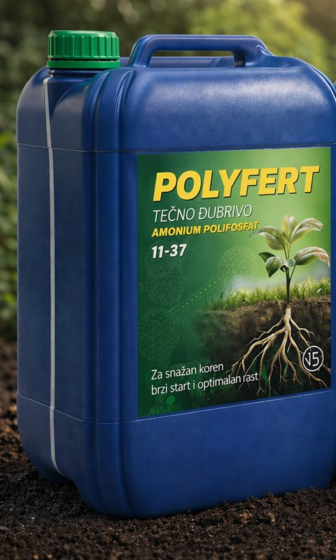

Specijalna đubriva nove generacije u granulisanoj i tečnoj formi, tečna azotna đubriva i klasična đubriva za ratarske, povrtarske i voćarske kulture.
Specijalna đubriva
Stabilna, dugotrajna i efikasna ishrana biljaka
Specijalna đubriva nove generacije: sporootpuštajući azot i fosfor, mikroelementi i sumpor — u granulisanoj i tečnoj formi.
Granulisana N, NP i NPK đubriva sa stabilizovanim azotom (inhibitori nitrifikacije) oslobađaju hranu postepeno i dugotrajno. Tečna đubriva — UAN i amonijum polifosfat — omogućavaju preciznu primenu: tačnu dozu, u fazi kada biljci treba.
Rezultat: stabilniji prinos, manji gubici hraniva i sigurnija proizvodnja.

Tečno đubrivo
POLYFERT 11-37
Ferti-start tehnologija
Startno tečno NP đubrivo nove generacije — snaga starta u jednoj formuli
Tečno
Start uz seme
Fertigacija i kapanje
Ratarstvo, povrtarstvo, voćarstvo
POLYFERT 11-37 je tečno startno đubrivo dobijeno polimerizacijom fosforne kiseline. Biljci daje fosfor i azot u prvim fazama rasta, kada su joj najpotrebniji, i podstiče snažan koren i ujednačen početni porast — u ratarstvu, povrtarstvu i voćarstvu.
Dva oblika fosfora u jednom đubrivu
35 % ortofosfatdostupan odmah65 % polifosfatrazlaže se postepeno
1 L = 1,4 kg → u litru 154 g N i 518 g P₂O₅ · azot je amonijačni (NH₄)
Pakovanje: kanister 14 kg (10 l)
U kanisteru je 1,5 kg N i 5,2 kg P₂O₅ — dovoljno za oko 0,5 ha starta uz seme (20–25 l/ha).
Jesenja osnovna ishrana ozimih žitarica, sa stabilizovanim azotom
Granulisano
Ječam, pšenica, ovas, raž, tritikale
Kukuruz i soja startno
U jesen, pred setvu ozimih žitarica, preporučujemo NutrActive expert NPK 20-20-0 + 22 SO₃ u proizvodnji ječma, pšenice, ovsa (zobi), raži i tritikalea.
Đubrivo obezbeđuje snabdevanje biljaka azotom sve do kraja marta, pa ima dovoljno vremena da se prva prihrana uradi po odgovarajućim vremenskim uslovima. Daje i pristupačan fosfor, uz sinergijsko dejstvo stabilizovanog azota i sumpora koje pomaže da se fosfor iz nerastvorljivih fosfornih soli u zemljištu prevede u oblik pristupačan biljkama.
Preporučuje se i startno, u proleće i na jesen, za proizvodnju kukuruza, soje i ozimih kultura na zemljištima visoko obezbeđenim kalijumom.
Okvirna količina: 250–300 kg/ha, u zavisnosti od analize plodnosti zemljišta i planiranog prinosa.
Startna ishrana ili prihrana azotom, jednim prohodom
Granulisano
Ozime i jare ratarske kulture
Stabilizovani azot
Za ozime i jare ratarske kulture neophodna je efikasna startna ishrana ili prihrana azotom. Zahvaljujući posebnoj formulaciji, NutrActive 27N obezbeđuje dugotrajan efekat uz samo jedan prohod i jednu prihranu, što je posebno važno kod ozimih žitarica.
Stabilizovani azot deluje postepeno tokom 90–120 dana, pa biljke dobijaju ujednačen dotok azota u najvažnijim fazama rasta.
veća efikasnost uz jednu aplikaciju
stabilni i kvalitetni prinosi
smanjenje gubitaka hraniva
očuvanje plodnosti zemljišta i bolja ekonomičnost proizvodnje
Đubrivo sa uravnoteženim odnosom 1:1:1 i dodatkom sumpora, namenjeno povećanju prinosa i efikasnoj ishrani biljaka. Aktivni faktor 1-cijano-guanidin (DCD) produžava dejstvo azota, a prisustvo oba oblika azota u zemljištu obezbeđuje dugotrajan i stabilan rast, nicanje, cvetanje i plodonošenje.
Fosfor (94 % rastvorljiv u vodi) podržava razvoj korenovog sistema i pravovremeni prelaz biljaka u reproduktivnu fazu, dok sumpor i kalijum poboljšavaju apsorpciju hraniva i kvalitet prinosa. Pogodno je za industrijske biljke, voće i povrće, uključujući kulture osetljive na hlor kao što su šargarepa i praziluk, kao i šparglu i celer.
Namena: industrijske kulture, voće i povrće, posebno u fazama osnovne ishrane i startnog razvoja, gde je potreban ravnomeran dotok hraniva i stabilan porast.
ComplefertExtra12-10-20+28 SO₃ +2 MgO +TE25 kg · 600 kg
Complefert
Complefert Extra 12-10-20 + 28 SO₃ + 2 MgO + TE
Kompleksno NPK đubrivo bogato kalijumom i magnezijumom
Granulisano
Svi tipovi useva
Kalijum i magnezijum
Mikroelementi
Complefert Extra je kompleksno NPK đubrivo sa dodatkom magnezijuma i mikroelemenata, pogodno za sve tipove useva. Posebno je bogato kalijumom i magnezijumom, pa odgovara kulturama u kojima kalijum igra ključnu ulogu za visoke i kvalitetne prinose.
Formula i kompletan sastav prilagođeni su osnovnom i površinskom đubrenju biljaka sa povećanim potrebama za kalijumom:
vinova loza
paprika, paradajz i špargla
krompir, luk i duvan
moderno voćarstvo i povrtarstvo usmereno na visokokvalitetne prinose
Sastav i oblik hranljivih materija povećavaju efikasnost đubrenja i obezbeđuju ravnomernu ishranu useva na svim tipovima zemljišta.
ComplefertBlue-Star12-12-17+SO₃ +2 MgO +TE25 kg · 600 kg
Complefert
Complefert Blue-Star 12-12-17 + SO₃ + 2 MgO + TE
Kompleksno NPK đubrivo za osnovno đubrenje svih useva
Granulisano
Voće
Povrće
Ratarstvo
Complefert Blue-Star je kompleksno NPK đubrivo sa dodatkom magnezijuma i elemenata u tragovima, pogodno za primenu kod svih tipova useva. Odlikuje se kompletnim sastavom, ravnomernim rasporedom makro i mikroelemenata u svim granulama, visokom rastvorljivošću fosfora u vodi i visokim sadržajem kalijuma i sumpora.
Formula i odnos hranljivih materija povećavaju apsorpciju elemenata i zadovoljavaju nutritivne potrebe biljaka, uz uravnoteženu ishranu.
Namena: osnovno đubrenje voća, povrća i ratarskih kultura, na svim tipovima zemljišta.
UAN (urea-amonijum-nitrat) je tečno azotno đubrivo koje omogućava preciznu ishranu useva.
Sadrži tri oblika azota: nitratni (odmah dostupan), amonijačni (brzo dostupan) i ureični (postaje dostupan tokom narednih dana), pa biljka dobija azot i odmah i postepeno. Nitratni deo radi i u hladnom proleće, kad se urea sporije razlaže.
Primenjuje se postojećom prskalicom; za prihranu useva preporučuju se sapnice za mlaz (trake) — manje dodira sa listom, manji rizik od ožegotina. Oprema treba da bude od nerđajućeg čelika ili plastike, jer UAN nagriza bakar, mesing i cink.
Pored specijalnih đubriva, u ponudi su i standardne formulacije.
Urea 46N (granulisana i prilirana)
Amonijum nitrat 34N
NPK 16-16-16
MAP 12-52-0
Amonijum sulfat 21N
KAN 26–27N
UAN 32N
Koje đubrivo je pravo za vašu parcelu?
Navedene količine su okvirne i zavise od kulture, planiranog prinosa i stanja zemljišta. Za preporuku za vašu parcelu javite nam se — pripremamo predlog.